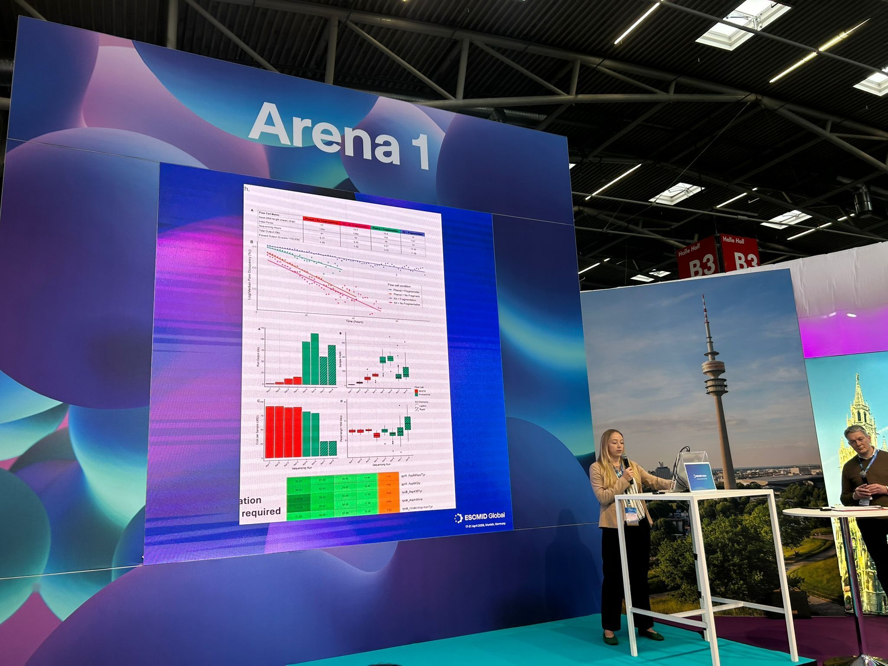
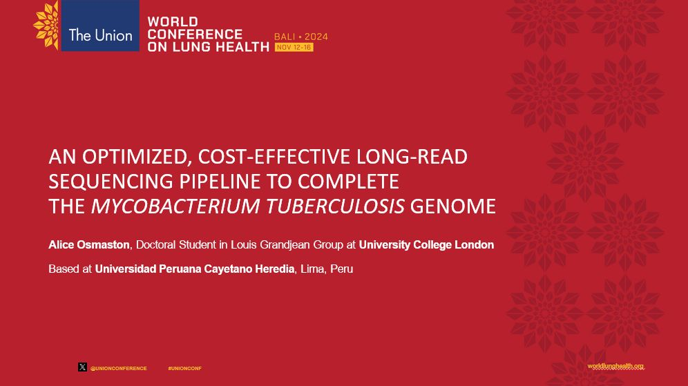

Transmission dynamics
Using genomic variation to understand how M. tuberculosis spreads across populations and how mixed infections complicate reconstruction.
Genomic epidemiology
Population analysis
Genomic epidemiology · tuberculosis · pathogen surveillance
PhD candidate at University College London studying the genomics of Mycobacterium tuberculosis, with a focus on transmission dynamics, drug resistance, and sequencing workflows that can work closer to the field.

Research
Alice's public research footprint sits at the junction of molecular microbiology, genomic epidemiology, and implementation. The portfolio foregrounds the problem her work is trying to solve: how to make whole-genome evidence faster, cheaper, and more useful for TB control.
Using genomic variation to understand how M. tuberculosis spreads across populations and how mixed infections complicate reconstruction.
Connecting sequencing evidence to resistance markers and treatment-relevant interpretation, particularly where culture-based workflows are slow.
Developing and evaluating low-cost long-read and tiled amplicon pipelines that can reduce turnaround time from weeks toward days.
Talks and Conferences
Verified entries link to public programmes or supplied presentation materials. The recent UCL London appearance remains to be confirmed with an exact title and event link.
London Calling 2026, Oxford Nanopore Technologies. Breakout: Pathogen surveillance from in-house to in the field. Video slot prepared for the YouTube recording once uploaded.
The Union World Conference on Lung Health, Bali, Indonesia. Alice presented an oral abstract on developing a long-read sequencing pipeline for Mycobacterium tuberculosis, giving a more complete view of the genome and currently under-sequenced regions.
Alice presented her research on developing low-cost solutions at ESCMID Global 2026, the 36th European Congress of Clinical Microbiology & Infectious Diseases, held at Messe München in Munich, Germany. She used the international congress to showcase her work to the European Society of Clinical Microbiology and Infectious Diseases.
Reported by project brief as a recent UCL talk. Add title, host department, room, date, and abstract once confirmed.
Conference Media
Alice presents an optimized Oxford Nanopore workflow for complete MTB genomes, covering DNA extraction changes that preserve long fragments, rapid library preparation, high-throughput PromethION sequencing, and down-sampling work showing that around 10,000 reads can support accurate resistance prediction. The approach reduces per-genome cost while preserving long reads for transmission, resistance, and surveillance analysis.
Recorded question panel from Alice's London Calling 2026 appearance.
Low-cost MTB genome sequencingComplete genomes for scalable TB surveillance.
Alice described an end-to-end pipeline that brings complete MTB genome sequencing within reach of resource-constrained laboratories. Key optimisations included gentle bead-beating for DNA extraction, rapid library preparation, multiplexed barcoded samples on a single flow cell, and a read threshold of about 10,000 reads for accurate drug-resistance prediction. The workflow reduced per-sample cost to roughly $26 while supporting near-complete reads and scalable TB surveillance.
ESCMID Global 2026, formerly ECCMID, took place at Messe München from 17-21 April 2026. Alice presented low-cost, high-throughput extraction and long-read sequencing work for Mycobacterium tuberculosis, focused on lowering the barrier to WGS for resistance, transmission, and surveillance analysis.

Oral abstract on an optimised, cost-effective long-read sequencing pipeline to complete the Mycobacterium tuberculosis genome, with work based at Universidad Peruana Cayetano Heredia in Lima, Peru.
Publications
Journal of Clinical Microbiology, 2026. Alice is listed among the authors; public abstracts describe TB-seq recovery of near-full genomes directly from sputum and resistance-relevant genomic data.
bioRxiv preprint, 2024. UCL Discovery lists Alice Osmaston as an author and provides an open-access accepted version.
ResearchGate lists Alice on this 2023 article. This appears outside the TB genomics focus, so it is included as a secondary publication until the complete bibliography is confirmed.
Beyond the Lab

Climbing adds a useful personal note to the portfolio: technical, patient, physical problem-solving outside the lab. Keep this as a lightweight section, not a lifestyle detour.
Profile
Alice Osmaston is a PhD candidate at University College London researching tuberculosis genomics, transmission, and drug resistance. Public profiles place her work in UCL's infection and immunity ecosystem, with extended field collaboration in Lima, Peru, alongside Universidad Peruana Cayetano Heredia.
This site is designed to make her work legible in under a minute: what she studies, what she has presented, what she has published, and where to find formal profiles.